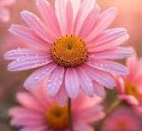

The outer green leaves that protect the flower bud before it opens.Petals: The bright, colorful parts that attract bees, birds, and other animals.Stamen: The male part that makes yellow dust called pollen. It has a stalk called a filament and a top part called an anther.Pistil (or Carpel): The female part in the middle. It includes the sticky stigma on top, a tube called the style, and the bottom part called the ovary which holds tiny